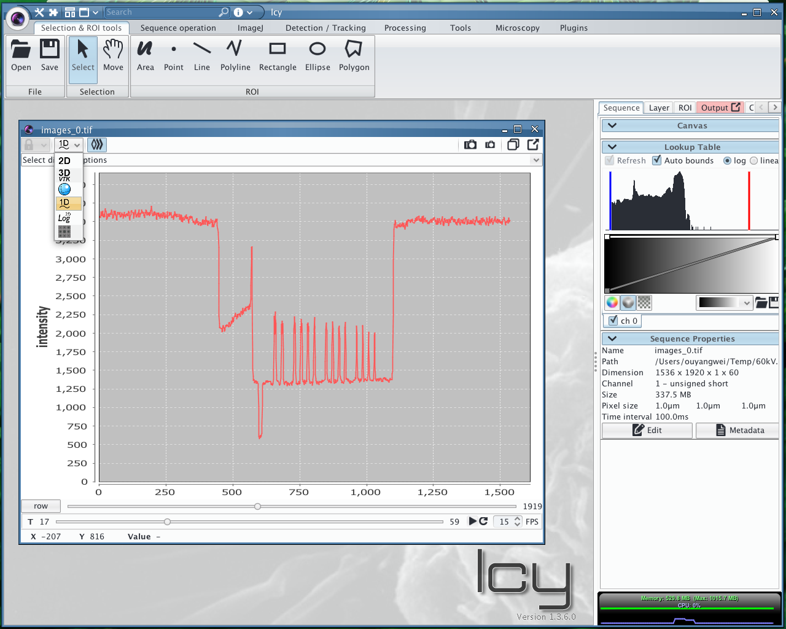

Plugin to show 1D signal in Icy is out!
1D signal representation in Icy
Previously, I mentioned there is no elegant way to show 1D signal in Icy, although 1D signal takes the most part NDT/NDE signal such as Ultrasonic, Eddy Current. Many imaging method is based on the analysis of 1D signal. For an instance, we should find the back wall echo in order to generate a simple C-Scan map. So show 1D signal as waveform is very important in a NDE system. But the previous method to do this is tedious, since we should put our profile line on the right position and should adjust two frames to get a better view. Operation in two frames makes the manipulation more complicated.
Canvas plugin
The answer is "Canvas", thanks Fabrice and Stephane. There is a mechanism called "Canvas" which is used for different type of representation of data. When you open a sequence in Icy, it will open in 2D canvas by default. And also you can shift different canvas on the top of the sequence window, for example you can expand your z-axis to make a montage view of your 3D data. Another good news is "Canvas" is supported in plugin developing. Then a Canvas Plugin will become an elegant way to extend Icy to support 1D signal representation. What's more, Icy itself have Jfreechart integrated in its library, which helps a lot when dealing with 1D signal GUI.
The Plugin -- Chart1DCanvas
After some coding work, I finally implemented a canvas plugin named Chart1DCanvas which can actually do the 1d signal representation work. This plugin will be act as a basis to the following NDE applications. Here goes a screen shot of the plugin.

With this plugin, Icy will show a 1d signal in native way which actually is canvas. We can use the canvas to show all kinds of waveforms such as eddy current and ultrasonic etc..
See more detail about the plugins, see [Download][../pages/downloads].